Java Swing GUI 따라하기 가이드JFrame에서 성적 관리 프로그램까지, 8단계
단계마다 코드를 그대로 따라 치고 실행한 뒤, 실행 화면과 같은지 확인하세요. 각 단계에는 브라우저에서 바로 눌러 볼 수 있는 직접 해보기 창이 있어서, 내 프로그램이 어떻게 움직여야 하는지 먼저 확인할 수 있습니다.
준비물
| JDK | 8 이상. 터미널에서 java -version 으로 확인 |
| 편집기 | IntelliJ IDEA, Eclipse, VS Code 중 아무거나 |
| 파일 이름 | 클래스 이름과 같아야 함. HelloFrame 클래스 → HelloFrame.java |
| 실행 | 편집기에서 main 이 있는 파일을 Run. 터미널이라면 javac -encoding UTF-8 HelloFrame.java 다음 java HelloFrame |
실행 화면은 Swing 기본 모양(Metal 테마)으로 찍었습니다. 버튼과 입력칸 모양은 여러분 화면과 같지만, 창 테두리와 제목 표시줄은 Windows나 macOS 모양으로 다르게 보일 수 있습니다. 이 페이지의 직접 해보기 창도 Metal 모양을 흉내 낸 것입니다.
빈 창 띄우기JFrame
JFrame을 상속한 클래스를 만들고 main 에서 setVisible(true) 를 부르면 창이 하나 뜹니다. 모든 GUI 프로그램은 이 뼈대에서 시작합니다.
| 번호 | 코드 | 화면에서 일어나는 일 |
|---|---|---|
| 1 | setTitle("나의 첫 GUI") | 제목 표시줄에 글자가 나옴 |
| 2 | setSize(320, 200) | 창 크기가 가로 320, 세로 200픽셀이 됨 |
setLocationRelativeTo(null) | 창이 모니터 가운데에 뜸 | |
setDefaultCloseOperation(JFrame.EXIT_ON_CLOSE) | X를 누르면 프로그램이 끝남. 없으면 창만 사라지고 프로그램은 계속 실행됨 | |
setVisible(true) | 창이 화면에 나타남. 항상 맨 마지막에 부름 |
SwingUtilities.invokeLater(...) 는 "화면 담당 스레드에서 창을 만들어라"는 뜻입니다. 지금은 모든 예제의 main 에 그대로 쓴다고만 기억하세요.
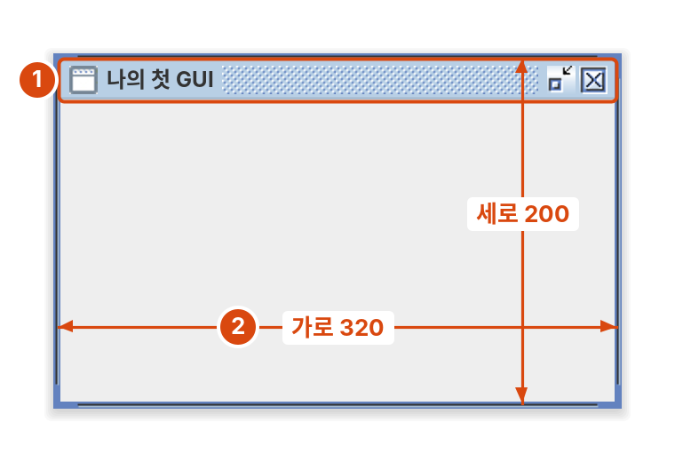
창 오른쪽 위의 X를 눌러 보세요. setDefaultCloseOperation 줄을 뺀 상태로 실행하면 창은 사라져도 프로그램은 끝나지 않습니다.
글자와 버튼JLabel, JButton
JLabel은 글자를 보여주고, JButton은 누를 수 있는 버튼입니다. 버튼을 눌렀을 때 할 일은 addActionListener 로 등록합니다.
| 번호 | 코드 | 화면에서 일어나는 일 |
|---|---|---|
| 1 | new JLabel("0번 눌렀어요", SwingConstants.CENTER) | 가운데 정렬된 글자가 나옴 |
| 2 | new JButton("눌러 보세요") | 아래쪽에 버튼이 나옴 |
| 3 | addActionListener(e -> { ... }) 안의 setText(...) | 버튼을 누를 때마다 ①의 글자가 바뀜 |
setFont(new Font(Font.SANS_SERIF, Font.BOLD, 24)) | 글자 크기 24, 굵게 | |
add(①, BorderLayout.CENTER), add(②, BorderLayout.SOUTH) | ①은 가운데, ②는 아래쪽에 배치 (6단계 참고) |
e -> { ... } 는 람다식입니다. "버튼이 눌리면 중괄호 안을 실행해라"라고 읽으면 됩니다.
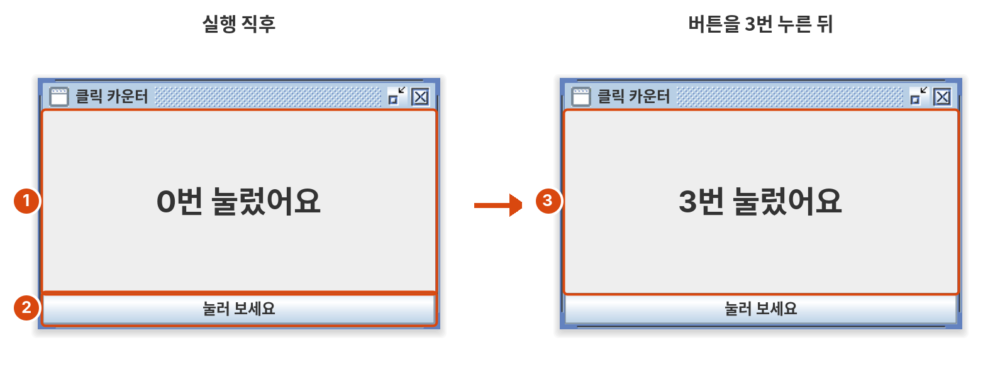
왼쪽: 실행 직후, 오른쪽: 버튼을 3번 누른 뒤
버튼을 누를 때마다 ③의 람다식이 실행되어 ①의 글자가 바뀝니다.
입력 받기JTextField, JPasswordField, JTextArea
한 줄 입력은 JTextField, 비밀번호는 JPasswordField, 여러 줄 글자는 JTextArea를 씁니다. 입력한 내용은 getText() 로 읽고, setText() 로 바꾸거나 비웁니다.
| 번호 | 코드 | 화면에서 일어나는 일 |
|---|---|---|
| 1 | new JTextField(12), getText(), setText("") | 이름 입력칸. 입력한 글자를 읽고, 다 쓴 뒤 비움 |
| 2 | new JPasswordField(12), getPassword() | 입력하면 ●로 가려짐. 내용은 char[] 로 읽음 |
| 3 | new JTextArea(5, 24), append(...) | 5줄짜리 글자 영역. append 는 맨 뒤에 이어 붙임 |
| 4 | new JButton("확인") + addActionListener | 누르면 ①②를 읽어서 ③에 한 줄을 추가 |
setEditable(false) | ③을 사용자가 직접 고칠 수 없음 | |
pack() | 내용 크기에 맞춰 창 크기를 자동으로 정함 (setSize 대신) |
입력칸에서 읽은 값은 항상 String 입니다. 숫자가 필요하면 Integer.parseInt(ageField.getText()) 처럼 바꿔 쓰고, 숫자가 아닌 값이 들어오는 경우는 8단계 addStudent() 처럼 처리합니다.
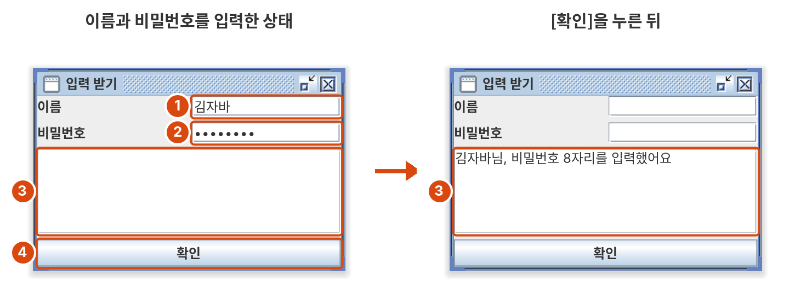
왼쪽: 이름과 비밀번호를 입력한 상태, 오른쪽: [확인]을 누른 뒤
이름과 비밀번호를 넣고 [확인]을 누르면 ③에 한 줄이 붙고 ①②가 비워집니다. 여러 번 눌러서 append 가 이어 붙이는 것을 확인하세요.
고르기JComboBox, JRadioButton, JCheckBox
목록에서 하나를 고를 때는 JComboBox, 몇 개 중 하나만 고를 때는 JRadioButton, 여러 개를 고를 수 있을 때는 JCheckBox를 씁니다. 선택됐는지는 isSelected() 로 확인합니다.
| 번호 | 코드 | 화면에서 일어나는 일 |
|---|---|---|
| 1 | new JComboBox<>(new String[]{...}), getSelectedItem() | 누르면 목록이 펼쳐지고 하나를 고름 |
| 2 | new JRadioButton("큰 컵") + ButtonGroup, isSelected() | 둘 중 하나만 선택됨 |
| 3 | new JCheckBox("샷 추가"), isSelected() | 여러 개를 동시에 선택할 수 있음 |
| 4 | resultLabel.setText(...) | [주문하기]를 누르면 고른 내용이 표시됨 |
ButtonGroup 은 화면에 보이지 않는 묶음입니다. 라디오 버튼을 그룹에 넣는 것과 별도로, 패널에도 add 해야 화면에 나타납니다.
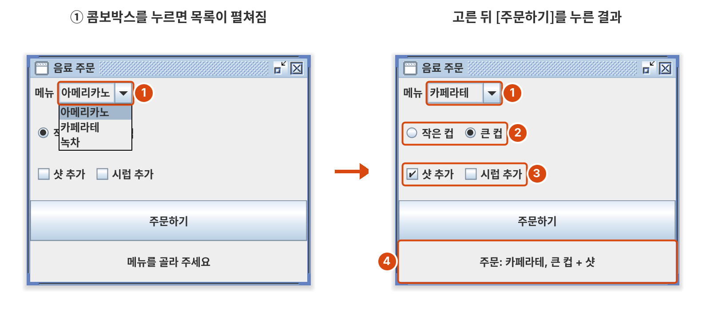
왼쪽: ①을 눌러 목록을 펼친 모습, 오른쪽: 카페라테·큰 컵·샷 추가를 고르고 [주문하기]를 누른 뒤
라디오 버튼은 둘 중 하나만, 체크박스는 여러 개를 고를 수 있습니다. 왼쪽 도구에서 ButtonGroup 을 빼면 라디오 버튼이 어떻게 되는지도 확인해 보세요.
목록과 표JList, JTable, JScrollPane
목록과 표는 데이터를 모델(DefaultListModel, DefaultTableModel)에 넣고, JList·JTable은 그것을 보여주기만 합니다. 모델에 데이터를 넣거나 빼면 화면이 자동으로 바뀝니다. 둘 다 JScrollPane에 넣어서 붙입니다.
5-1. 할 일 목록 JList
| 번호 | 코드 | 화면에서 일어나는 일 |
|---|---|---|
| 1 | inputField + addButton → todoModel.addElement(text) | 입력하고 [추가]를 누르면 목록에 한 줄이 생김 |
| 2 | new JList<>(todoModel), new JScrollPane(todoList) | 목록이 보이고, 길어지면 스크롤이 생김. 클릭한 줄은 파랗게 선택됨 |
| 3 | getSelectedIndex() → todoModel.remove(index) | 선택한 줄이 지워짐. 선택이 없으면 -1 |
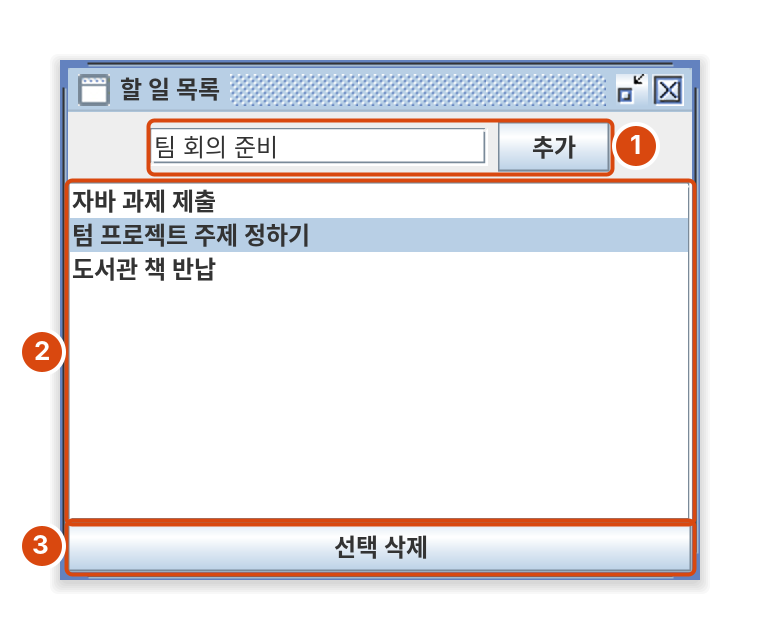
세 줄을 추가하고 두 번째 줄을 클릭한 상태
할 일을 여러 개 넣어 보고, 아무것도 선택하지 않은 채 [선택 삭제]를 눌러 보세요. getSelectedIndex() 가 -1이라 아무 일도 안 일어납니다.
5-2. 표 JTable
| 번호 | 코드 | 화면에서 일어나는 일 |
|---|---|---|
| 1 | String[] columns = {"학번", "이름", "학과"} | 표 맨 위 열 제목 |
| 2 | model.addRow(new Object[]{...}) | 표에 한 줄(행)이 추가됨 |
new JScrollPane(table) | 스크롤 패널에 넣어야 ① 열 제목이 보임 |
표의 칸을 더블클릭하면 내용을 고칠 수 있습니다. 줄을 지우는 방법(getSelectedRow(), removeRow())은 8단계에 나옵니다.
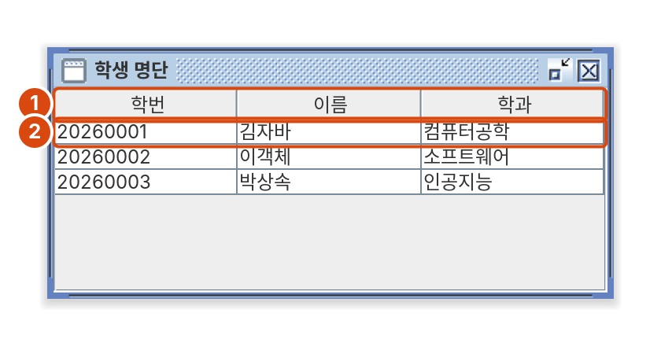
줄을 클릭하면 선택되고, 칸을 더블클릭하면 내용을 고칠 수 있습니다. 왼쪽 도구에서 JScrollPane 을 빼면 열 제목이 사라지는 것을 확인하세요.
배치하기레이아웃
레이아웃은 컴포넌트를 어디에, 어떤 크기로 놓을지 정합니다. 같은 버튼도 레이아웃에 따라 전혀 다르게 놓입니다. 아래 LayoutDemo 를 만들고, ▼▲ 사이만 바꿔 가며 실행해 보세요.
FlowLayout: 한 줄로 늘어놓기
버튼이 제 크기 그대로 왼쪽에서 오른쪽으로 놓이고, 자리가 모자라면 다음 줄로 넘어갑니다. 위 코드를 그대로 실행한 뒤 창을 줄여 보세요.
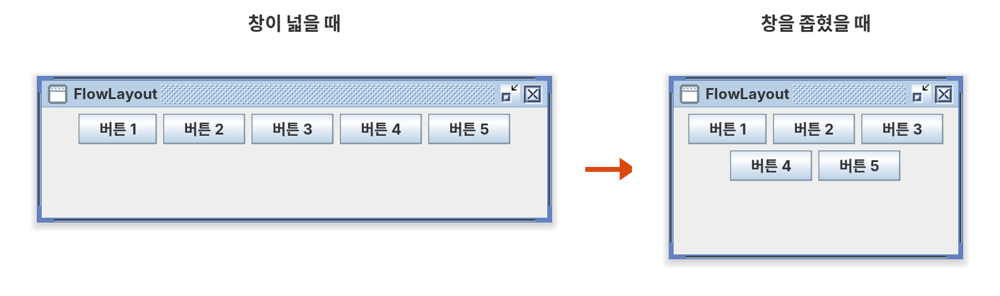
왼쪽: 창이 넓을 때, 오른쪽: 창을 좁혔을 때
BorderLayout: 동서남북과 가운데
CENTER가 남는 공간을 모두 차지합니다. 한 구역에는 컴포넌트가 하나만 들어가므로, 여러 개를 넣으려면 JPanel 에 묶어서 넣습니다. 창 크기는 setSize(360, 220) 으로, 창 제목은 BorderLayout으로 바꿨습니다.
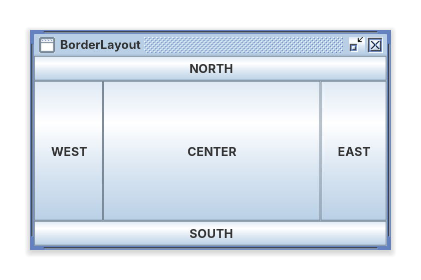
GridLayout: 같은 크기의 칸
모든 칸의 크기가 같고, 왼쪽에서 오른쪽, 위에서 아래 순서로 채워집니다. 버튼이 5개라 마지막 칸은 비어 있습니다. 창 크기는 setSize(360, 160), 창 제목은 GridLayout입니다.
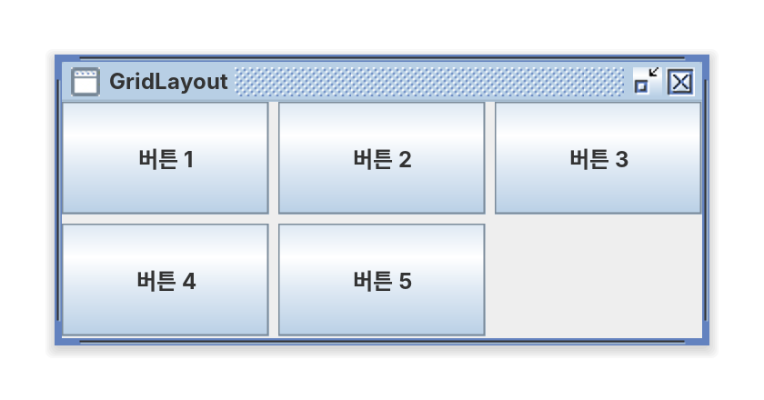
직접 해보기: 레이아웃 바꿔 보기
레이아웃을 고르고 창 너비 슬라이더를 움직여 보세요. FlowLayout만 버튼이 다음 줄로 넘어가고, BorderLayout과 GridLayout은 버튼 크기가 창에 맞춰 늘어납니다.
언제 무엇을 쓸까
| 레이아웃 | 이럴 때 씁니다 | 기본값인 곳 |
|---|---|---|
FlowLayout | 버튼 몇 개를 한 줄로 놓을 때 | JPanel |
BorderLayout | 화면 전체의 뼈대 (위: 입력, 가운데: 내용, 아래: 버튼) | JFrame |
GridLayout | 계산기 버튼처럼 같은 크기 칸, "라벨-입력칸" 쌍 (3단계) | 없음 |
대부분의 화면은 JFrame을 BorderLayout으로 나누고, 각 구역에 FlowLayout이나 GridLayout JPanel을 넣어 만듭니다. 8단계 예제가 그렇게 만들어져 있습니다.
대화상자와 메뉴JOptionPane, JMenuBar
알림·확인·입력 창은 JOptionPane 의 메서드 한 줄로 띄웁니다. 메뉴는 메뉴바(JMenuBar) 안에 메뉴(JMenu), 메뉴 안에 항목(JMenuItem)을 넣는 구조입니다.
| 번호 | 코드 | 화면에서 일어나는 일 |
|---|---|---|
| 1 | JMenuBar > JMenu("파일") > JMenuItem("새로 만들기"), setJMenuBar(menuBar) | 창 위쪽에 메뉴가 생기고, 누르면 항목이 펼쳐짐 |
| 2 | JOptionPane.showMessageDialog(this, "저장되었습니다.") | [확인] 버튼만 있는 알림 창 |
| 3 | JOptionPane.showConfirmDialog(this, "정말 삭제할까요?") | 예/아니오/취소 창. 누른 버튼이 int 로 돌아옴 (JOptionPane.YES_OPTION 등) |
| 4 | JOptionPane.showInputDialog(this, "이름을 입력하세요") | 입력 창. 입력한 글자가 String 으로 돌아오고, [취소]를 누르면 null |
대화상자가 떠 있는 동안 코드는 다음 줄로 넘어가지 않고, 사용자가 버튼을 누를 때까지 기다립니다. 버튼 글자(예, 아니오, 취소)와 창 제목은 컴퓨터 언어 설정에 따라 영어(Yes, No, Cancel)로 나올 수도 있습니다.
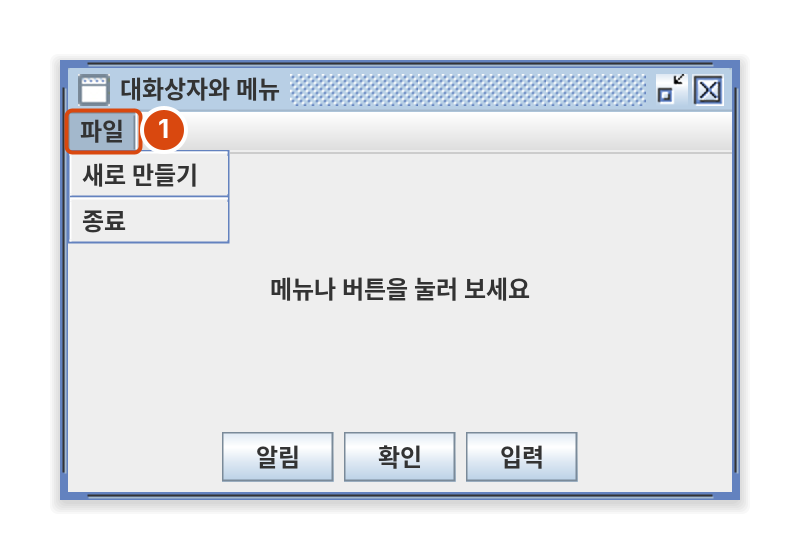
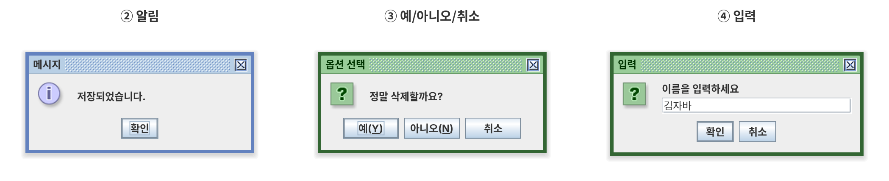
[확인] 창에서 예·아니오·취소를 각각 눌러 보고, [입력] 창에서 [취소]를 눌렀을 때 글자가 바뀌지 않는 것을 확인하세요. 메뉴의 [종료]는 System.exit(0) 이라 프로그램이 끝납니다.
종합 예제성적 관리 프로그램
지금까지 배운 것을 합친 프로그램입니다. 파일을 3개로 나눠서 화면을 맡는 클래스와 데이터를 맡는 클래스를 분리했습니다. 텀 프로젝트도 이렇게 나누면 화면을 바꿔도 계산 코드는 그대로 두고 고칠 수 있습니다.
| 파일 | 맡은 일 |
|---|---|
Student.java | 학생 한 명의 이름과 점수 |
GradeBook.java | 학생 목록 저장, 추가·삭제, 평균 계산 (화면 코드 없음) |
GradeManager.java | 화면. 버튼이 눌리면 GradeBook의 메서드를 부르고 결과를 표시 |
| 번호 | 코드 | 화면에서 일어나는 일 | 복습 |
|---|---|---|---|
| 1 | JPanel + JLabel, JTextField, JButton("추가") | 이름·점수를 입력하고 [추가]를 누르면 ②에 한 줄이 생김 | 2·3단계 |
| 2 | JTable + DefaultTableModel + JScrollPane | 학생 목록 표. 클릭하면 줄이 선택됨 | 5단계 |
| 3 | averageLabel.setText(String.format(...)) | 추가·삭제할 때마다 평균이 다시 계산됨 | 2단계 |
| 4 | getSelectedRow() → removeRow(row) | 선택한 줄이 지워짐 | 5단계 |
Integer.parseInt + try-catch + showMessageDialog | 점수에 숫자가 아닌 값을 넣으면 알림 창이 뜸 | 7단계 | |
BorderLayout: ① NORTH, ② CENTER, ③④ SOUTH | 화면 뼈대 | 6단계 |
세 파일을 같은 폴더에 만들고 GradeManager 를 실행합니다.
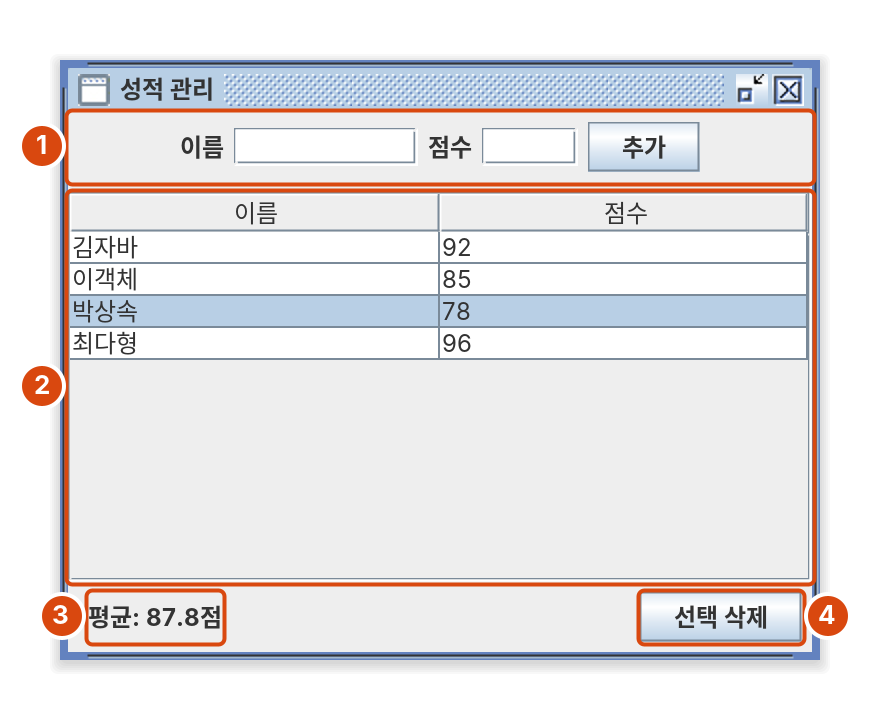
김자바 92, 이객체 85, 박상속 78, 최다형 96을 추가하고 세 번째 줄을 선택한 상태
점수에 "A"처럼 숫자가 아닌 값을 넣어 보세요. NumberFormatException 을 try-catch 로 잡아서 알림 창이 뜹니다. 아무 줄도 고르지 않고 [선택 삭제]를 눌러도 알림이 뜹니다.
막혔을 때 확인할 것
실행 화면이 예제와 다르면 아래 표에서 증상을 찾아보세요.
| 증상 | 확인할 것 |
|---|---|
| 실행했는데 창이 안 뜸 | main 에 setVisible(true) 가 있는지 |
| 창은 뜨는데 비어 있음 | 컴포넌트를 add 했는지, setVisible(true) 보다 먼저 add 했는지 |
| 창을 닫아도 프로그램이 안 끝남 | setDefaultCloseOperation(JFrame.EXIT_ON_CLOSE) 가 있는지 (1단계) |
| 컴포넌트가 하나만 보임 | BorderLayout 에서 위치 없이 add 하면 모두 CENTER에 겹침. add(comp, BorderLayout.SOUTH) 처럼 위치를 적기 |
| 라디오 버튼이 여러 개 선택됨 | ButtonGroup 에 넣었는지 (4단계) |
| 라디오 버튼이 화면에 없음 | ButtonGroup 과 별도로 패널에도 add 했는지 |
| 표에 열 제목이 안 보임 | new JScrollPane(table) 로 감싸서 붙였는지 (5단계) |
숫자를 입력하면 빨간 오류 (NumberFormatException) | Integer.parseInt 를 try-catch 로 감쌌는지 (8단계 addStudent) |
catch (Exception e) 에서 컴파일 오류 | 람다의 e 와 이름이 겹침. ex 처럼 다른 이름으로 |
| 한글이 깨져서 나옴 | 소스 파일을 UTF-8로 저장했는지, 터미널이라면 javac -encoding UTF-8 로 컴파일했는지 |
| 창 크기를 바꾸면 화면이 엉망이 됨 | setLayout(null) 과 좌표 대신 레이아웃을 쓰기 (6단계) |